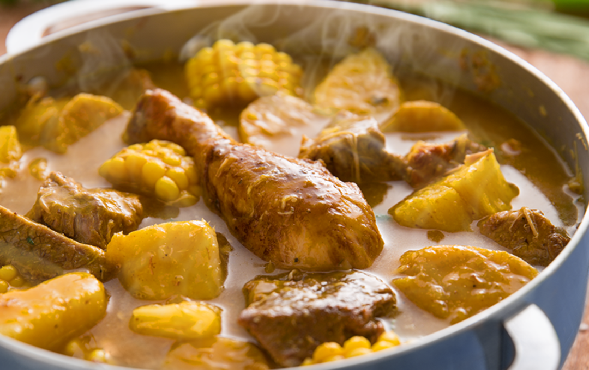

SANCOCHO (MEAT AND ROOT VEGETABLES STEW)

Sancocho (Dominican meat and vegetables stew) is, without doubt, Dominicans' most cherished dish. Sancocho is usually made for special occasions, but you can enjoy it any day. Here I show you all the ways we make our beloved sancocho and how you can make it too.
General Information:
PREP TIME:
25 mins
COOK TIME:
1 hr
TOTAL TIME:
1 hr 25 mins
COURSE:
Main Course
CUISINE:
Dominican, Latino
SERVINGS:
12 or 8 very generous servings (aprox)
CALORIES:
1240 kcal
Ingredients:
- 1 pound beef flank, chuck, or round [0.45 kg] cut into small pieces
- 1 pound goat meat, [0.45 kg] cut into small pieces
- 1 pound pork for stews, belly, or chump end [0.45 kg] cut into small pieces
- Juice of 2 limes
- 1 teaspoons minced cilantro, or parsley
- ½ teaspoons oregano (dry, ground), powdered
- 1½ teaspoons garlic, crushed
- 1½ teaspoons salt
- 4 tablespoon vegetable oil
- 1 pound chicken, [0.45 kg] cut into small pieces
- 1 pound pork ribs, [0.45 kg] cut into small pieces
- 1 pound bones from a smoked ham, [0.45 kg] cut into small pieces
- 1 pound pork sausage, longaniza [0.45 kg] cut into small pieces
- 2 corn cob, cut into ½-inch slices, optional
- ½ pound auyama (kabocha squash), (auyama) cut into 1-inch pieces [0.23 kg]
- 3 plantain (green, unripe), peeled, 2 cut into 1-inch pieces, one left whole
- ½ pound ñame (yam), cut into 1-inch pieces [0.23 kg]
- ½ pound yautia (malanga), cut into 1-inch pieces [0.23 kg]
- ½ pound yuca (cassava), cut into 1-inch pieces [0.23 kg]
Instructions:
- Place the beef, pork, and goat meat in a large bowl and season with lime juice, cilantro (or parsley), oregano, garlic, and a teaspoon of salt.
Coat meat with the seasoning. Marinate for at least half an hour, better an hour. - In a large pot heat the oil over high heat, add the seasoned meats, and stir (be careful with hot oil splattering).
Cook stirring until browned. Add the remaining meats (chicken, pork ribs, ham bones, pork sausage) and corn, and cook stirring for a couple of minutes. - Lower heat to medium and pour ½ gallon [2.5 lt] of water. Simmer until it breaks the boil.
- Once the water breaks the boils, add auyama, chopped plantain, and root vegetables (ñame, yautía, yuca).
Grate, or scrape with the knife the remaining plantain to make it into a pulp, and add to the pot. - Simmer covered over low heat until the last ingredients you added are cooked through, it should have thickened a bit too. If it dries too much, add water as necessary, or simmer uncovered to reduce if it is not thick enough for your taste.
Season with salt to taste. - Remove from the heat and serve.